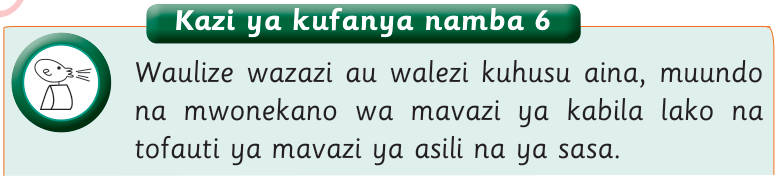

Kazi ya kufanya namba 6

Waulize wazazi au walezi kuhusu aina, muundo na mwonekano wa mavazi ya kabila lako na tofauti ya mavazi ya asili na ya sasa.

Waulize wazazi au walezi kuhusu aina, muundo na mwonekano wa mavazi ya kabila lako na tofauti ya mavazi ya asili na ya sasa.